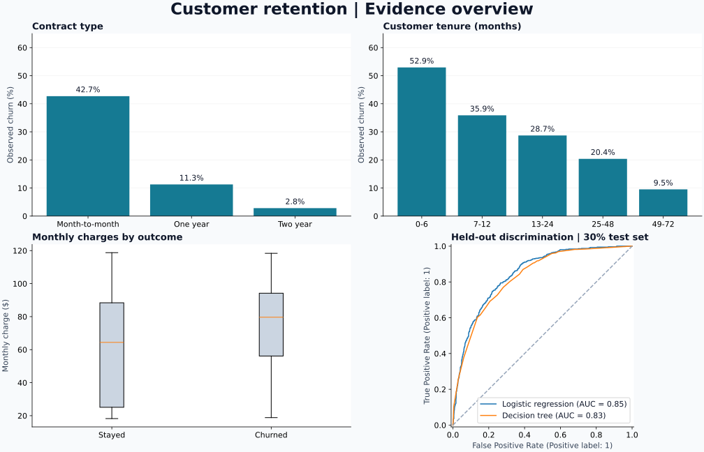

Business intelligence / Customer retention
Understand churn.
Test the next decision.
A reproducible analysis of IBM's Telco customer sample, connecting descriptive segments with held-out model evaluation.
Patterns and prediction
Segment charts use the full sample descriptively. Model curves use only the held-out test split. Associations are not evidence that an intervention causes lower churn.

Compare against a baseline
Churn is the positive class. Logistic threshold: 0.5. Tree: depth 5, minimum 30 records per leaf. All parameters fixed before evaluation; no test-set tuning.
Business interpretation
- Investigate onboarding and support in high-churn early-tenure segments; validate explanations with customer research.
- Test voluntary contract incentives with a randomized pilot, measuring incremental retention and net cost.
- Review value perception among higher-bill segments. These data cannot establish that lowering prices will reduce churn.
Scope and limits
This is a portfolio reconstruction, not a live scoring system or an exact reproduction of the original coursework run. A random split on one historical sample does not validate future deployment. There is no causal experiment, temporal validation, fairness audit or campaign ROI evidence.
Data: IBM Telco sample (Apache-2.0 repository). This report publishes aggregates only. Demographics and customer IDs are excluded from modeling; that does not establish fairness.